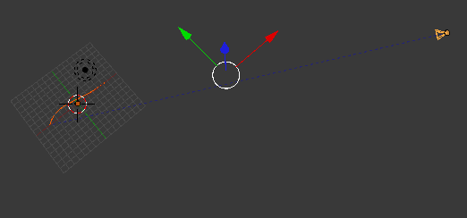
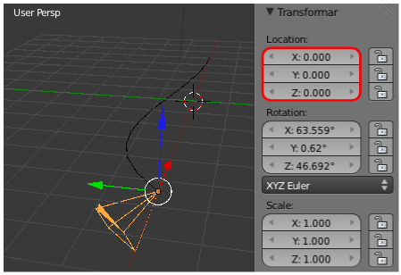
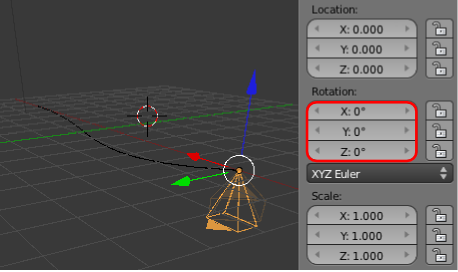
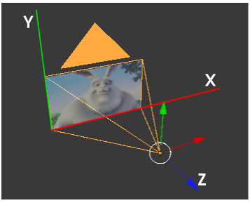
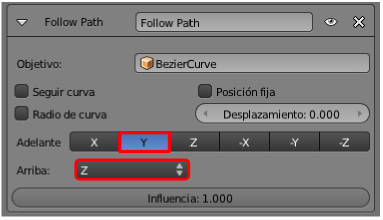
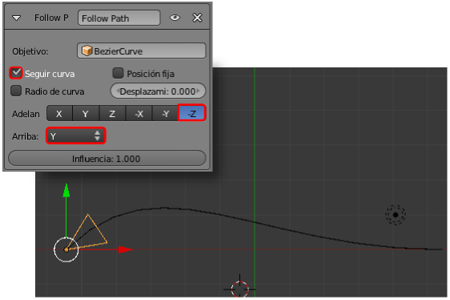

El caso de la cámara
Suponemos que:
- Hemos añadido una trayectoria (Añadir/Curva/Bezier) y que la hemos escalado ("S") al alza.
- A la cámara le hemos aplicado la restricción Seguir camino.
- Hemos llevado a cabo la triquiñuela explicada para conseguir los keyframes de animación.
Esto es lo que tenemos.
La cámara se comporta de un modo raro, alejándose de lo que debería ser su lugar de inicio en el recorrido. ¿Por qué la cámara se comporta de forma distinta a como lo hizo el cubo?
Vamos poco a poco. En la escena inicial de Blender la cámara no está en el origen de coordenadas e incluso aparece girada, de modo que los ejes Locales y los Globales no coinciden. Y es eso lo que está originando un resultado incontrolado. La solución.:
- Eliminar el desplazamiento que ha sufrido el objeto. Para ello vamos al cuadro Propiedades ("N") y en la botonera Transformar ponemos todos los valores de Location a 0.000 (otra forma es usar el menú Objeto/Limpiar/Posición). Con esto el origen de la cámara se sitúa al principio de la curva. No se coloca en el punto 0,0,0 del sistema Global porque tiene asignada la restricción Seguir camino.

- Eliminar la rotación. Podríamos usar, como antes el cuadro Propiedades ("N") y poner a 0.000 todos los parámetros Rotation, o usar el menú Objeto/Limpiar/Rotación.

Los ejes de la cámara
Debe llamarnos la atención que una de las particularidades más significativas de la cámara es que su eje Z (azul) es el que queda perpendicular al encuadre; de esa manera los ejes X e Y guardan coherencia respecto al punto de vista de la cámara.

Imagen: Fotograma de Big Buck Bunny // Licencia: CC-BY-3.0
Y el tema de los ejes sigue condicionando la restricción Seguir camino. Por defecto esta restricción sabemos que orienta al objeto con:
- Adelante: Y.
- Arriba: Z.

Sin embargo esas opciones no son buenas para nosotros debido a la orientación de los ejes de la cámara. Debemos cambiar:
- Activar Seguir curva.
- Adelante: -Z (negativo).
- Arriba: Y.
